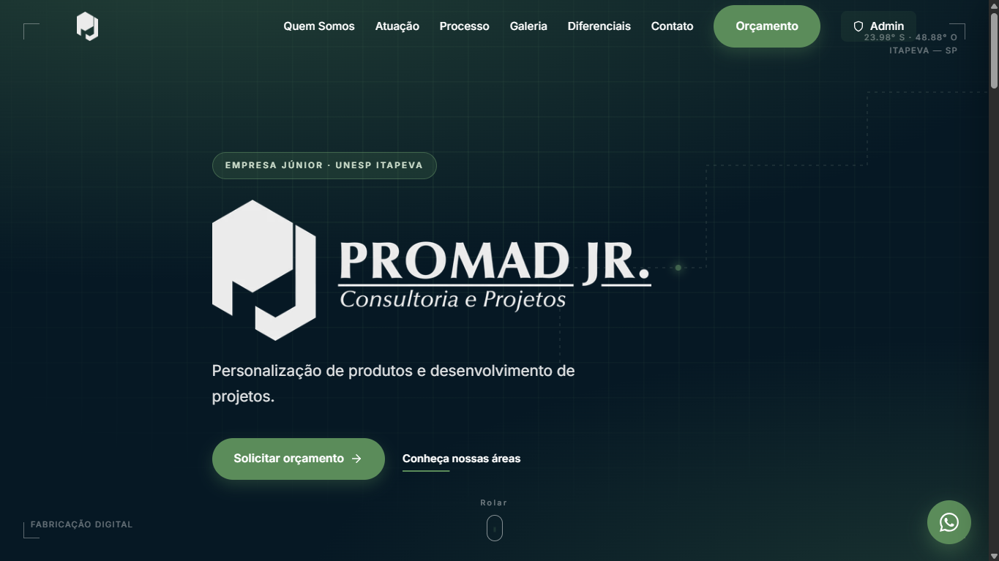
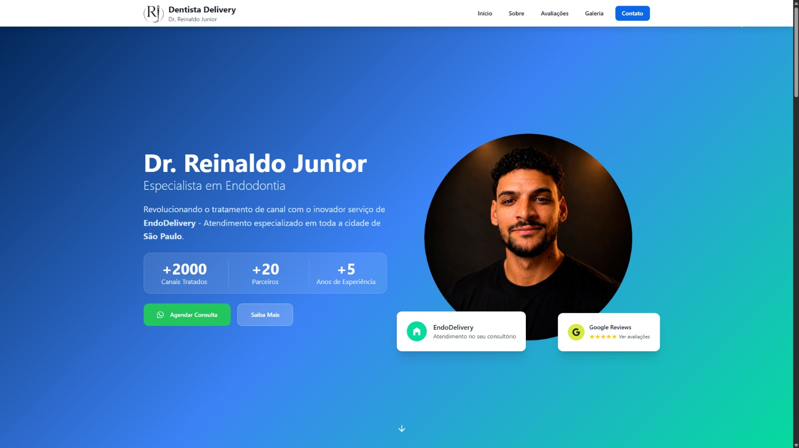
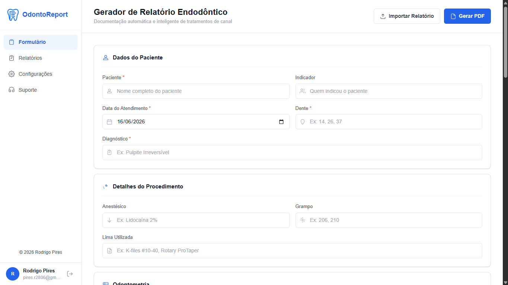
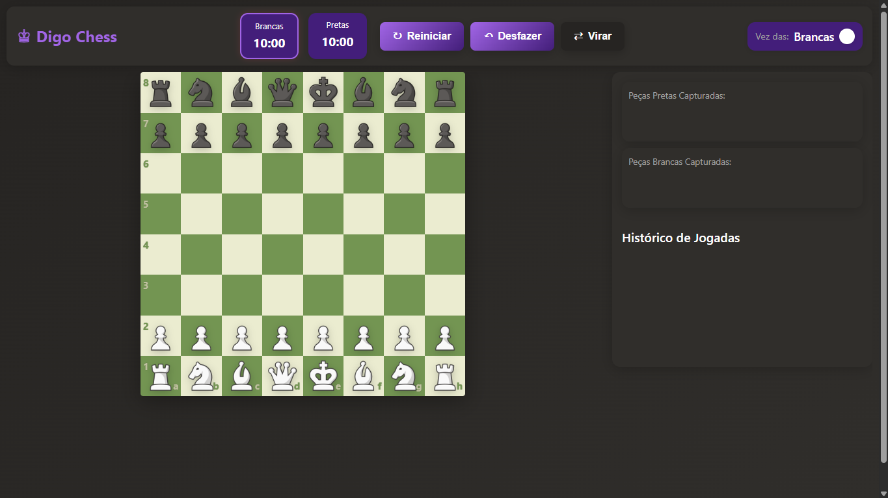
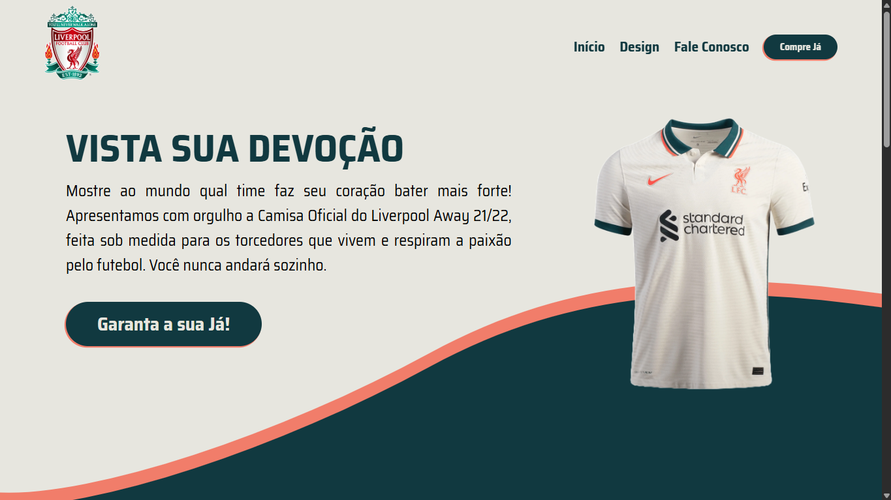

Profissional de dados e software, com experiência em engenharia de dados no setor bancário e em desenvolvimento de aplicações web para clientes reais. No Santander, atuei em pipelines de dados com Python, SQL e Azure Databricks, orquestradas com Control-M e automatizadas via GitHub Actions, gerando indicadores financeiros com impacto direto no Índice de Basileia. Antes, criei dashboards em Power BI e automações com Python e Power Automate. Também desenvolvo aplicações web completas, do banco de dados ao deploy. Busco oportunidade como Engenheiro de Dados Júnior (ou Desenvolvedor Python com foco em dados).
Dashboards e relatórios interativos
Análise e modelagem de dados
Design e otimização de estruturas

Plataforma institucional desenvolvida para a PROMAD Jr. (UNESP - Itapeva). A solução integra uma landing page otimizada para presença digital a um painel administrativo seguro, permitindo a gestão autônoma de conteúdos e galerias de imagens pela empresa.

Plataforma digital desenvolvida para o Dr. Reinaldo Junior, integrando uma landing page para captação de contatos a um painel administrativo completo. O sistema centraliza a gestão dos atendimentos em formato “delivery”, permitindo o controle de agenda, finanças, pacientes e histórico de visitas e atendimentos realizados em diferentes clínicas.

Aplicação web moderna para dentistas que oferece solução completa para documentação clínica. Com interface intuitiva, dashboard personalizado, geração de PDFs, importação de relatórios e sistema de configurações.

Jogo de xadrez completo e moderno desenvolvido com HTML5, CSS3 e JavaScript puro. Interface responsiva, regras completas (roque, en passant, promoção), cronômetro e histórico de jogadas.

Website responsivo criado como projeto prático no Senac Largo Treze. Desenvolvido com HTML5, CSS3 e JavaScript puro para consolidação de lógica de programação e layouts modernos.
Desenvolvo sites profissionais, rápidos e responsivos, além de automações que otimizam processos e economizam tempo. Desde sites institucionais até sistemas com painel administrativo.
Desktop, Tablet e Mobile
Inteligente e Eficiente
Otimizada e Veloz
Moderno e Intuitivo
Sites modernos e automações inteligentes para seu negócio crescer.
Estou em busca da minha próxima oportunidade como Engenheiro de Dados Júnior e também atendo projetos de sites e automação. Vamos conversar sobre como posso ajudar.